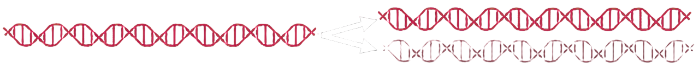
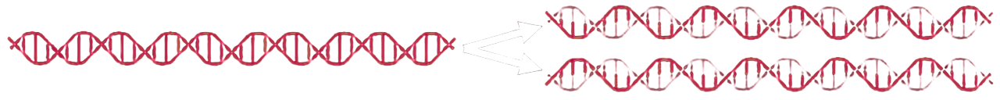
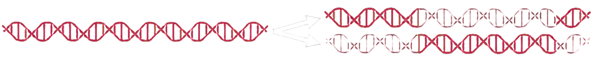
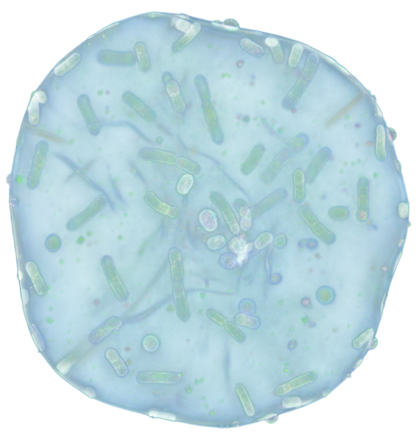
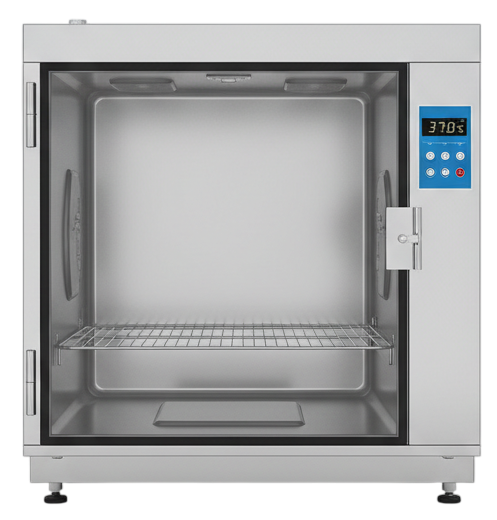
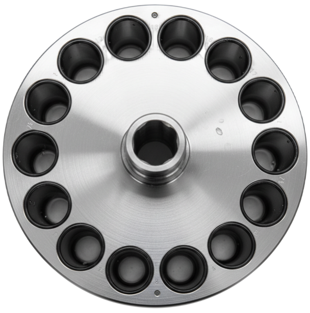

Historical context & replication models
Debate in the 1950s
After the DNA structure model had been proposed, it became clear that genetic information had to be duplicated reliably during cell division. What remained controversial was how the two strands of the double helix were distributed during replication.
At the same time, key work was being done on the structure and function of DNA: the role of complementary base pairing, ideas about the strands acting as templates, and early biochemical approaches that described replication as an enzyme-driven process. In this context, several plausible replication models competed with one another and were difficult to distinguish experimentally.
Experimental idea (labeling & density)
DNA is labeled as "heavy" by growing bacteria in ¹⁵N medium and then allowed to replicate further after transfer to ¹⁴N medium. An isotope (such as ¹⁵N or ¹⁴N) is a variant of the same element, here nitrogen, with a different number of neutrons and therefore a slightly different mass. In the experiment, the bacteria are centrifuged every 20 minutes and the density of the DNA is measured. Those 20 minutes correspond to one bacterial generation.
Principle of density-gradient centrifugation: In a concentrated salt solution, centrifugation creates
a stable density gradient. DNA molecules move through that gradient until their buoyant density matches the density of the surrounding medium.
Heavily labeled DNA (¹⁵N) has a higher density and forms a band farther down than light DNA (¹⁴N);
hybrid DNA appears in between.
Model 1: Conservative
In conservative replication, the original double helix remains intact as a complete unit. Newly synthesized DNA forms a second, entirely new double helix. After each round of replication, two populations therefore exist: unchanged "old" DNA and completely "new" DNA.

Model 2: Semiconservative
In semiconservative replication, the two strands of the parent DNA separate and each serves as a template for the synthesis of a complementary new strand. Each daughter double helix therefore contains exactly one old strand and one newly formed strand.

Model 3: Dispersive
In the dispersive model, replication does not produce clearly separated "old" and "new" strands. Instead, segments of parental DNA are mixed in a mosaic pattern with newly synthesized segments within each strand. With every round of replication, the proportion of newly formed segments increases while the old segments become distributed across many molecules.

Meselson-Stahl experiment simulation
Bacteria Drag

¹⁵N-Medium Drop

¹⁴N-Medium Drop

Incubator Click

Centrifuge Click
